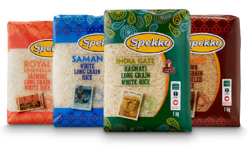
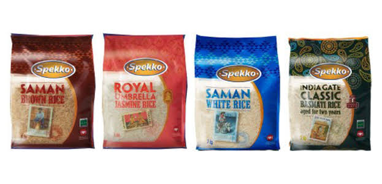
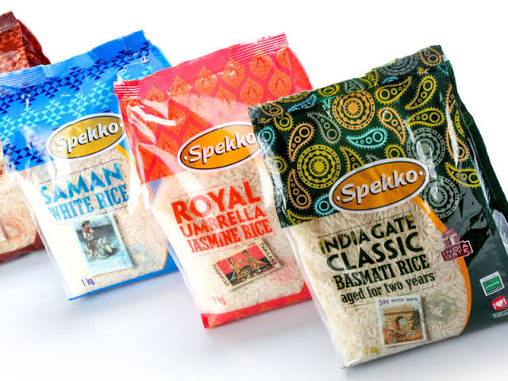

  
This is parboiled long grain rice. It used by a lot of people because of how tasty it is and how easy it is to cook. it is unbroken, clean and white.it is known to have more than double the amount of vitamins compared to other rice because it undergoes a long process of being parboiled. that process transfers all the minerals and vitamins that are naturally in the outer bran layer to the actual rice kenel. Spekko rice is known to take 20-25 minutes to cook, you just put water and the rice in the pot and cook it in medium heat of the stove. This kind of rice is from 3 countries which are Himalayas, Thailand and Uruguay.